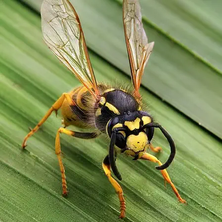
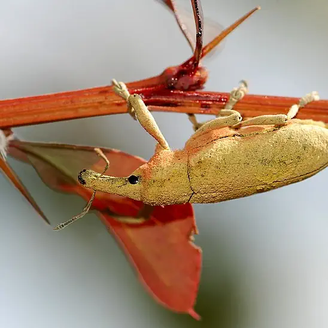

Wasps
Wasps are most prevalant as pests in Spring through to early Autumn. If you're seeing wasps frequently, it may be a sign there is a nest nearby. We've been dealing with wasps for years and can usually deal with them on the first visit.
Rats

Rats are typically distinguished from mice by their size. Small droppings on the floor and gnawed holes at the ground level may indicate a rat infestation. We provide a variety of solutions including humane traps.
Moths

Moths are probably best recognised for their butterfly-like appearance, but the larvae stage of a moth's lifecycle can cause numerous issues. Patches of ruined carpet may be a sign of carpet moths.
Bedbugs

Bedbugs are notoriously difficult to remove once an infestation has started. Despite their name, they often survive in sofas, clothes, and other furniture. We have a vigorous process that will ensure your home is clear.
Fleas

Fleas are most commonly a problem for pet-owners as they usually cannot survive for long on humans alone. They can live in furniture for short periods of time however, and we can provide services to ensure both your pets and home are clear of fleas.
Weevils
Weevils are a kind of beetle that are normally found in dry foodstuffs such as pasta or biscuits. To make sure your food is safe, the storage area must be properly dealt with. We can also put provisions in place to ensure you are safeguarded against weevils in the future.